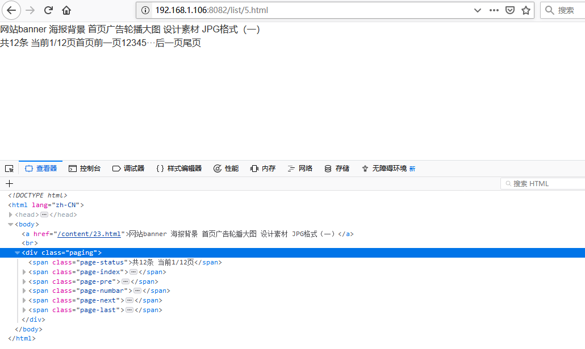
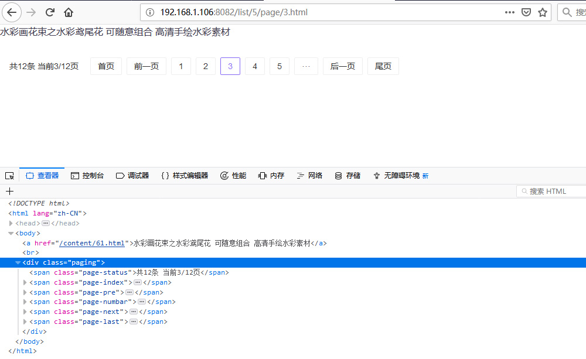
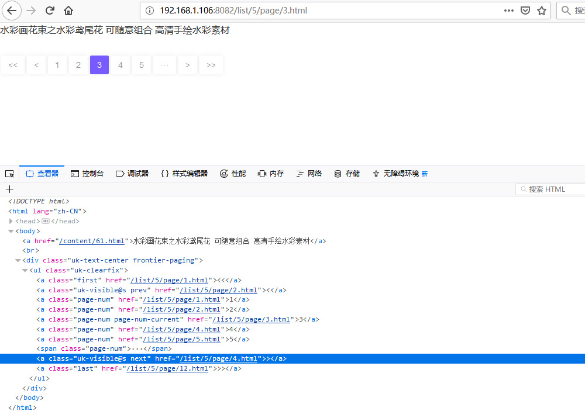

要自定义分页，首先要使用分页。
根据PbootCMS官方文档，分页标签有两种：
系统内置的完整分页条
{page:bar}独立的分页元素标签，可自由搭配使用
{page:current}、{page:count}、{page:rows}...等我们先来看第一种：系统内置的完整分页条
代码如下：
<div class="paging">{page:bar}</div>可以看到，一个完整的分页条就出来了。

而且，每个元素都已经拥有了自己的样式名称，例如：.page-status、.page-inde...等。
接下来只要写上对应的CSS进行美化就可以了。
例如：
/* 分页样式 */
.paging { margin-top: 32px; font-size: 14px; }
.paging > span { margin: auto 16px; }
.paging .page-numbar { margin: auto 0; }
.paging .page-numbar .page-num,
.paging .page-index,
.paging .page-pre,
.paging .page-next,
.paging .page-last { display: inline-block; margin: auto 4px; padding: 2px 12px; border: 1px solid #EEE; border-radius: 2px; }
.paging .page-numbar .page-num-current,
.paging .page-numbar .page-num:hover { border-color: #8667F7; color: #8667F7; }一个简单的分页样式就完成了：

怎么样？用PbootCMS作者的话来说：“是不是简单得想哭？”
如果有需求需要对分页条的内容进行自定义，那么看第二种：独立的分页元素标签
以本站的分页代码为例：
//通过{page:count}来判断当前列表的分页数量，如果超过1页则显示分页条
{pboot:if('{page:count}' > 0)}
//分页容器
<div class="uk-text-center frontier-paging">
<ul class="uk-clearfix">
//{page:index}以及{page:pre}指定首页和上一页的链接地址，并且可以在a标签中自由设置首页或者上一页的文字
<a class="first" href="{page:index}"><i class="fa fa-angle-double-left"></i></a>
<a class="uk-visible@s prev" href="{page:pre}"><i class="fa fa-angle-left"></i></a>
//分页条
{page:numbar}
//同首页和上一页，这里是尾页和下一页
<a class="uk-visible@s next" href="{page:next}"><i class="fa fa-angle-right"></i></a>
<a class="last" href="{page:last}"><i class="fa fa-angle-double-right"></i></a>
</ul>
</div>
{/pboot:if}添加样式美化：
/* 分页样式 */
.frontier-paging { margin-top: 32px; }
.frontier-paging ul { display: inline-block; vertical-align: bottom; }
.frontier-paging ul span,
.frontier-paging ul a { display: block; float: left; margin: auto 2px; padding: 4px 12px; background: #FFF; box-shadow: 0 0 8px rgba(0,0,0,0.07); border-radius: 2px; font-size: 14px; color: #999; }
.frontier-paging ul a.page-num-current,
.frontier-paging ul a:hover { background: #775BFF; color: #FFF; }效果图：（由于演示站没有加载字体图标，箭头就用普通的括号来表示了）

教程到此为止，剩下的就靠大家自由发挥了。
总结：还是以前所说的，PbootCMS的各种标签已经非常丰富，能不能做出好的东西，就看能不能熟悉标签，自由组合来达成各种需求。
下一篇：使用Ajax无刷新提交留言及表单